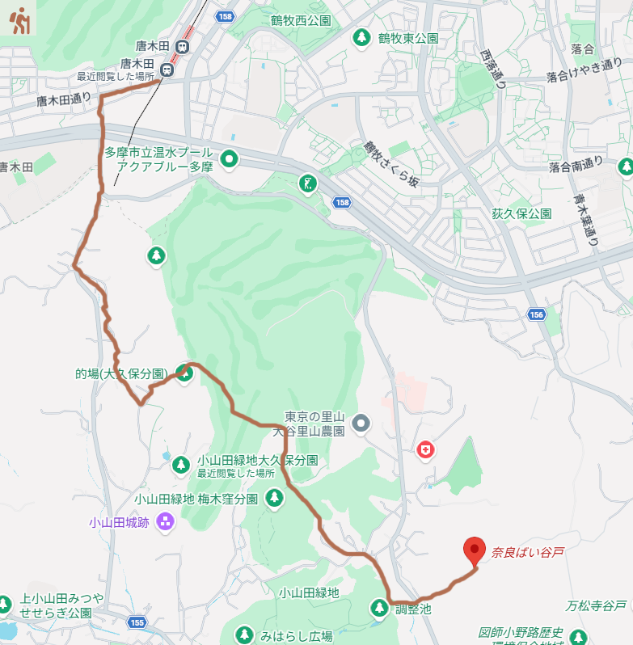
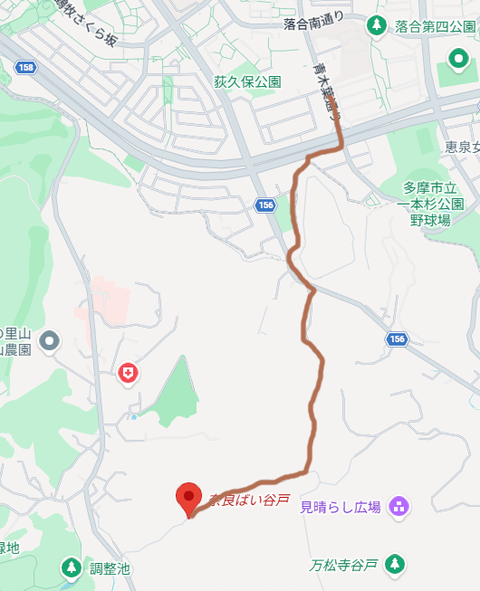

ハイキングコース
四季折々に表情を変えるハイキングコースが数多く設定されています。
雑木林や田んぼ、ため池といった里山の景観を楽しみながら、歩いてみてください。
天候によって足場がぬかるむことがあるため、歩きやすい服装と靴がおすすめです。
水分補給をお忘れなく。
〈小田急線唐木田駅～小山田緑地サービスセンター～SatoYama cafe（奈良ばい谷戸）コース〉
3.3km・約50分

〈一本杉公園バス停～小野路里山交流館～SatoYama cafe（奈良ばい谷戸）コース
2.5km・約40分

他にも、様々なハイキングコースがあります